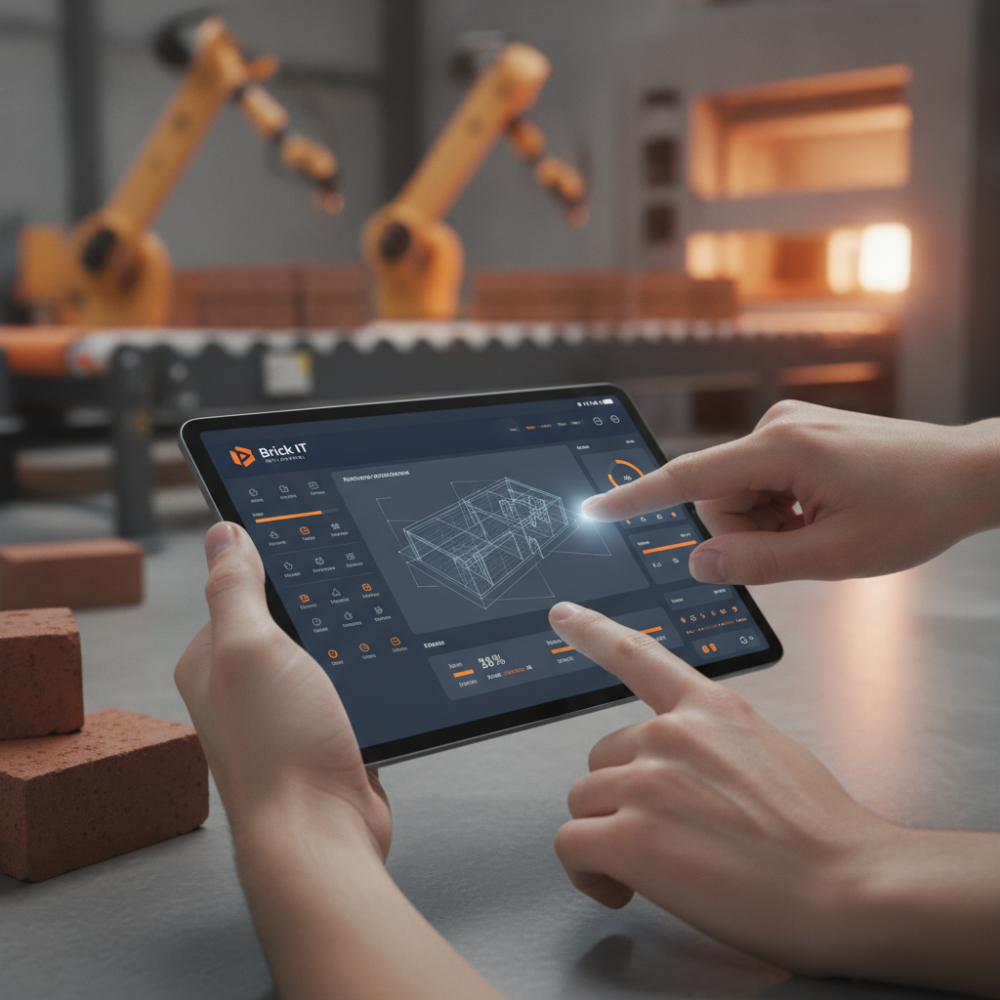

Zukunft gestalten.
Digitalisierung, die Ihr Mittelstand versteht.
Wir transformieren Ihre Prozesse mit maßgeschneiderter KI und branchenspezifischen ERP-Systemen. Effizienz, Datensouveränität und nachhaltiges Wachstum für Ihr Unternehmen – heute und morgen gesichert.
Ihr Wegweiser in die digitale Ära
In einer Welt, die sich immer schneller dreht, ist Digitalisierung kein Luxus, sondern eine strategische Notwendigkeit. Der deutsche Mittelstand, das Rückgrat unserer Wirtschaft, steht vor der Herausforderung, Tradition und Innovation intelligent zu verbinden. Hier setzt brick IT an: Wir sind Ihr strategischer Partner, der den Mittelstand nicht nur begleitet, sondern aktiv formt und für die Zukunft rüstet. Unsere Expertise liegt darin, komplexe technologische Konzepte in greifbare, wertschöpfende Lösungen zu übersetzen, die exakt auf Ihre individuellen Bedürfnisse zugeschnitten sind. Wir verstehen die spezifischen Dynamiken und Anforderungen kleiner und mittlerer Unternehmen und entwickeln präzise Strategien, die den Kern Ihres Geschäfts stärken und Sie für die digitale Ära optimal aufstellen.
Von intelligenten KI-Agenten, die repetitive Aufgaben übernehmen und Ihre Mitarbeiter entlasten, bis hin zu spezialisierten ERP-Systemen, die speziell für die einzigartigen Anforderungen der Ziegeleibranche entwickelt wurden – wir schaffen digitale Infrastrukturen, die Ihre Teams befähigen und Ihre Produktivität exponentiell steigern. Erleben Sie, wie modernste Technologie zum echten Wettbewerbsvorteil wird, indem sie Prozesse optimiert, Ressourcen schont und neue Wachstumschancen eröffnet. Mit brick IT investieren Sie in eine nachhaltige und effiziente Zukunft, in der Ihre Daten sicher sind und Ihre Prozesse reibungslos ablaufen.
Ihre Vorteile mit brick IT:
- Effizienz-Booster: Automatisieren Sie Routineaufgaben und gewinnen Sie wertvolle Zeit für strategische Entscheidungen.
- Zukunftssicher: Innovative KI und spezialisierte ERP-Systeme für nachhaltiges Unternehmenswachstum und Wettbewerbsfähigkeit.
- Datensouveränität: Maximale Kontrolle über Ihre sensiblen Daten durch flexible Deployment-Optionen und DSGVO-Compliance.
Ihre digitale Transformation: Unsere Kernkompetenzen für den Mittelstand
Entdecken Sie, wie unsere maßgeschneiderten Lösungen Ihr Unternehmen voranbringen und für die Herausforderungen von morgen wappnen.
KI & Automatisierung – Intelligente Agenten für Ihren Alltag
Die Ära der künstlichen Intelligenz ist da, und brick IT macht sie für Ihr Unternehmen nutzbar. Wir entwickeln maßgeschneiderte KI-Agenten, die darauf spezialisiert sind, repetitive und zeitintensive Aufgaben in verschiedenen Unternehmensbereichen zu übernehmen. Stellen Sie sich vor, Ihre Buchhaltung erledigt Dokumentenverarbeitung automatisch, Ihr HR-Team hat stets den Überblick über Ressourcen, Ihr Marketing generiert Content auf Knopfdruck, Ihre Produktion optimiert den Energieverbrauch und Ihr Vertrieb beschleunigt Angebotsprozesse. Unsere neun bereits produktiven KI-Agenten sind der Beweis für unsere Fähigkeit, Innovation in greifbaren Mehrwert zu verwandeln. Entlasten Sie Ihr Team, reduzieren Sie Fehler und schaffen Sie Raum für strategische Initiativen.
- Automatisierte Buchhaltungsprozesse
- Effizientes HR- & Zeitmanagement
- KI-gestützte Content-Erstellung
- Optimiertes Energiemanagement in der Produktion
- Beschleunigte Vertriebsabläufe
ERP-Beratung & Implementierung – BrickBOS: Die Branchenlösung für Ziegeleien
Ein leistungsstarkes und auf die Branche zugeschnittenes ERP-System ist das Rückgrat jedes erfolgreichen Unternehmens. Mit BrickBOS bieten wir eine einzigartige ERP-Plattform, die vollständig auf die spezifischen Anforderungen der Ziegeleibranche zugeschnitten ist. Basierend auf der bewährten ERPBOS (Softbauware) begleiten wir Sie von der ersten Beratung über die Einführung bis zur individuellen Anpassung. Erleben Sie eine nahtlose Migration von Altsystemen wie ZiegelWin und profitieren Sie von einer zentralen Verwaltung aller Zulassungen und Ziegeldaten. Die demnächst verfügbare automatische Ziegeletikett-Erstellung wird Ihre Produktion weiter optimieren. Mit unserem Projektmanagement und der Change-Begleitung sichern wir einen reibungslosen Übergang und nachhaltigen Erfolg.
- Spezialisierte ERP-Lösung für Ziegeleien
- Nahtlose Migration von ZiegelWin
- Individuelle Systemanpassungen
- Zentrale Verwaltung aller Ziegeldaten
- Professionelles Projekt- & Change-Management

Flexible Deployment-Optionen – Ihre Daten, Ihre Souveränität
Die Wahl der richtigen IT-Infrastruktur ist entscheidend für Sicherheit und Flexibilität. Bei brick IT garantieren wir maximale Datensouveränität und DSGVO-Konformität durch flexible Deployment-Optionen für alle unsere Produkte. Ob Sie die volle Kontrolle auf Ihren eigenen Servern bevorzugen (On-Premise), die Skalierbarkeit einer Private Cloud (Azure, AWS, Google Cloud) nutzen möchten, eine vollständig verwaltete Lösung in unserer Brick-IT Cloud suchen oder eine Hybrid-Strategie verfolgen – wir passen uns Ihren Anforderungen an. Alle Varianten bieten denselben Funktionsumfang, und ein Wechsel ist jederzeit möglich. So bleiben Sie agil und Ihre Daten stets geschützt und in Ihrer Hand.
- Brick-IT Cloud: Sofort einsatzbereit & skalierbar
- On-Premise: Maximale Datensouveränität & Kontrolle
- Private Cloud: Elastisch skalierbar in eigener Region
- Hybrid: Flexible Datenverteilung & Migration
Ihr Weg zur digitalen Exzellenz: So arbeiten wir partnerschaftlich
Ein transparenter Prozess, der Sie von der ersten Idee bis zum nachhaltigen Erfolg begleitet.
Analyse & Strategie – Ihr Fundament für den Erfolg
Wir beginnen mit einem tiefgehenden Verständnis Ihrer aktuellen Geschäftsprozesse, Herausforderungen und Ziele. In intensiven Workshops identifizieren wir gemeinsam ungenutzte Potenziale und entwickeln eine maßgeschneiderte Digitalisierungsstrategie. Diese Strategie ist Ihr Fahrplan, der exakt auf Ihre Unternehmensvision abgestimmt ist und klare Meilensteine definiert.
Konzeption & Entwicklung – Innovation nach Maß
Basierend auf der erarbeiteten Strategie konzipieren und entwickeln wir Ihre individuellen KI-Agenten oder implementieren und passen Ihr BrickBOS ERP-System präzise an. Dabei legen wir größten Wert auf eine intuitive Benutzerführung, Skalierbarkeit und die nahtlose Integration in Ihre bestehende IT-Landschaft. Wir bauen Lösungen, die funktionieren.
Implementierung & Schulung – Reibungsloser Übergang
Die neuen Lösungen werden sorgfältig in Ihre IT-Infrastruktur integriert. Parallel dazu schulen wir Ihr Team umfassend und praxisnah. Unser Ziel ist es, dass Ihre Mitarbeiter die neuen Systeme schnell und sicher beherrschen, um einen reibungslosen Übergang zu gewährleisten und die Akzeptanz im Unternehmen zu maximieren. Wir lassen Sie nicht allein.
Support & Optimierung – Langfristige Partnerschaft
Auch nach der erfolgreichen Einführung bleiben wir Ihr verlässlicher Partner. Wir bieten kontinuierlichen Support, überwachen die Performance Ihrer Systeme und optimieren diese laufend, um maximale Effizienz und Zukunftsfähigkeit zu gewährleisten. Die digitale Welt entwickelt sich ständig weiter – wir sorgen dafür, dass Ihr Unternehmen immer einen Schritt voraus ist.
Warum brick IT Ihr idealer Partner für die Digitalisierung ist
Wir verbinden tiefes Branchenwissen mit technologischer Exzellenz und echter Partnerschaft.
Mittelstands-Experten mit Branchenfokus – Wir sprechen Ihre Sprache
Unsere tiefe Expertise im deutschen Mittelstand, insbesondere in der Ziegeleibranche, ist unser Alleinstellungsmerkmal. Wir verstehen nicht nur die technischen Aspekte der Digitalisierung, sondern auch die spezifischen Geschäftsmodelle, Herausforderungen und Chancen Ihrer Branche. Diese Kombination ermöglicht es uns, Lösungen zu entwickeln, die nicht nur technisch brillant, sondern auch praktisch relevant sind und einen echten Mehrwert für Ihr Unternehmen schaffen. Wir sind keine externen Berater, sondern ein Teil Ihres Teams, der Ihre Vision teilt.
Maßgeschneiderte Innovation, keine Standardlösung – Perfektion, die sich auszahlt
Jedes Unternehmen ist einzigartig, und Ihre Digitalisierungslösung sollte es auch sein. Deshalb bieten wir keine Lösungen von der Stange, sondern entwickeln individuelle KI-Agenten und passen ERP-Systeme präzise an Ihre internen Abläufe und spezifischen Anforderungen an. Von der ersten Idee bis zur finalen Implementierung arbeiten wir eng mit Ihnen zusammen, um eine Lösung zu schaffen, die perfekt sitzt, Ihre Prozesse optimiert und Ihnen einen entscheidenden Wettbewerbsvorteil verschafft. Das Ergebnis ist eine digitale Infrastruktur, die exakt auf Ihre Bedürfnisse zugeschnitten ist und sich langfristig auszahlt.
Maximale Datensouveränität & DSGVO-Konformität – Ihre Daten in sicheren Händen
Ihre Daten sind Ihr wertvollstes Kapital, und ihr Schutz hat für uns oberste Priorität. Wir legen größten Wert auf Sicherheit und Kontrolle. Mit flexiblen Deployment-Optionen wie On-Premise oder Private Cloud und einer 'DSGVO by design'-Philosophie stellen wir sicher, dass Ihre sensiblen Informationen stets geschützt und in Ihrer Hand bleiben. Wir bieten Ihnen die Gewissheit, dass Ihre Daten nicht nur sicher sind, sondern Sie auch jederzeit die volle Kontrolle darüber behalten. Vertrauen Sie auf einen Partner, der Datenschutz ernst nimmt.
Ganzheitliche Begleitung & Partnerschaft – Ihr Erfolg ist unser Ziel
Wir sehen uns nicht als reinen Dienstleister, sondern als langfristigen Partner auf Ihrem Digitalisierungsweg. Von der ersten Analyse über die Implementierung bis zur kontinuierlichen Optimierung stehen wir Ihnen mit Rat und Tat zur Seite. Unser Engagement endet nicht mit der Übergabe einer Lösung; wir sind an Ihrem nachhaltigen Erfolg interessiert. Durch regelmäßigen Austausch und proaktive Unterstützung stellen wir sicher, dass Ihre digitale Infrastruktur stets optimal funktioniert und sich an neue Herausforderungen anpasst. Ihre Vision ist unser Antrieb.
Häufig gestellte Fragen zur Digitalisierung mit brick IT
Antworten auf Ihre wichtigsten Fragen rund um KI, ERP und Ihre digitale Transformation.
Maßgeschneiderte KI bedeutet, dass wir intelligente Agenten entwickeln, die exakt auf die spezifischen, repetitiven Aufgaben in Ihrem Unternehmen zugeschnitten sind. Statt generischer Tools erhalten Sie Lösungen, die Ihre individuellen Prozesse optimieren, Fehler reduzieren und maximale Effizienz erzielen. Sie profitieren von einer erheblichen Zeitersparnis, Kostenreduktion und der Möglichkeit, Ihre Mitarbeiter auf wertschöpfendere Tätigkeiten zu konzentrieren, was die Mitarbeiterzufriedenheit steigert und die Innovationskraft Ihres Unternehmens fördert.
Wir legen größten Wert auf den Schutz Ihrer Daten. Dies gewährleisten wir durch flexible Deployment-Optionen wie On-Premise-Installationen auf Ihren eigenen Servern oder Private Cloud-Lösungen, die Ihnen die volle Kontrolle über Ihre Daten geben. Zudem ist unsere gesamte Entwicklung von Grund auf 'DSGVO by design' konzipiert. Das bedeutet, dass Datenschutzaspekte bereits in der Planungs- und Entwicklungsphase berücksichtigt werden, um höchste Sicherheitsstandards und die Einhaltung aller relevanten gesetzlichen Bestimmungen zu garantieren.
Ja, BrickBOS ist eine hochspezialisierte ERP-Lösung, die auf Basis von ERPBOS (Softbauware) entwickelt und vollständig auf die einzigartigen Anforderungen der Ziegeleibranche zugeschnitten wurde. Es ist die ideale Plattform für Unternehmen in diesem spezifischen Sektor, da es branchenspezifische Prozesse, Datenstrukturen und Herausforderungen adressiert, die in generischen ERP-Systemen oft nicht ausreichend berücksichtigt werden. Dies ermöglicht eine optimale Prozessintegration und Effizienzsteigerung in Ziegeleibetrieben.
Die Dauer eines Digitalisierungsprojekts mit brick IT hängt stark vom Umfang, der Komplexität Ihrer Anforderungen und den spezifischen Zielen ab. Nach einer detaillierten Analyse Ihrer aktuellen Situation und der Definition der Projektziele erstellen wir einen realistischen und transparenten Zeitplan. Unser Fokus liegt auf einer effizienten Umsetzung und der Erzielung schneller, messbarer Ergebnisse, ohne dabei Kompromisse bei der Qualität einzugehen. Wir halten Sie während des gesamten Projekts stets auf dem Laufenden.
Die Migration auf BrickBOS bietet Ihnen eine moderne, zukunftssichere und hochspezialisierte Plattform. Sie profitieren von erweiterten Funktionen, einer besseren Integration in moderne IT-Landschaften und einer optimierten Benutzerfreundlichkeit. BrickBOS ermöglicht eine zentralisierte Verwaltung aller relevanten Daten und Prozesse, was zu einer erheblichen Effizienzsteigerung führt. Zudem ist BrickBOS aktiv in der Weiterentwicklung, während ZiegelWin oft an seine Grenzen stößt. Sie investieren in eine Lösung, die speziell für die aktuellen und zukünftigen Bedürfnisse von Ziegeleien konzipiert ist.
Absolut. Wir verstehen uns als langfristigen Partner. Nach der erfolgreichen Implementierung stehen wir Ihnen mit umfassendem Support, regelmäßiger Wartung und kontinuierlicher Optimierung Ihrer Systeme zur Seite. Unser Ziel ist es, den langfristigen Erfolg Ihrer Digitalisierung zu sichern und sicherzustellen, dass Ihre Lösungen stets auf dem neuesten Stand der Technik sind und optimal funktionieren. Wir bieten Ihnen proaktive Unterstützung und sind bei Fragen oder Problemen jederzeit für Sie da.
Unsere Spezialisierung auf den Mittelstand und insbesondere die Ziegeleibranche, kombiniert mit unserer Expertise in maßgeschneiderter KI und branchenspezifischen ERP-Systemen, macht uns einzigartig. Wir bieten keine generischen Lösungen, sondern entwickeln präzise auf Ihre Bedürfnisse zugeschnittene Strategien. Zudem legen wir höchsten Wert auf Datensouveränität und eine partnerschaftliche Zusammenarbeit auf Augenhöhe. Wir sind Ihr strategischer Partner, der Ihre Vision versteht und in digitale Realität umsetzt.
Unsere KI-Lösungen sind zwar branchenübergreifend einsetzbar, da repetitive Aufgaben in vielen Sektoren existieren. Neben der Ziegeleibranche profitieren insbesondere Unternehmen aus dem produzierenden Gewerbe, der Logistik, dem Handel und dem Dienstleistungssektor von unseren intelligenten Agenten. Überall dort, wo manuelle, wiederkehrende Prozesse optimiert werden können, schaffen unsere maßgeschneiderten KI-Lösungen einen erheblichen Mehrwert und entlasten Mitarbeiter.
Ein Erstgespräch mit brick IT ist unkompliziert und unverbindlich. Sie können uns direkt über unser Kontaktformular auf der Website erreichen, uns eine E-Mail senden oder uns telefonisch kontaktieren. Wir freuen uns darauf, Ihre spezifischen Anforderungen zu besprechen, Ihre Fragen zu beantworten und gemeinsam die Potenziale für Ihr Unternehmen zu identifizieren. Nehmen Sie den ersten Schritt in Richtung einer effizienteren und zukunftssicheren Digitalisierung mit uns.
In der Brick-IT Cloud setzen wir auf höchste Sicherheitsstandards, die den Anforderungen der DSGVO und modernster IT-Sicherheit entsprechen. Dazu gehören dedizierte Instanzen, regelmäßige Sicherheitsaudits, Verschlüsselung der Daten im Ruhezustand und während der Übertragung sowie strenge Zugangskontrollen. Unsere Infrastruktur wird kontinuierlich überwacht, um potenzielle Bedrohungen frühzeitig zu erkennen und abzuwehren. Ihre Daten sind bei uns sicher und geschützt, während Sie von der Skalierbarkeit und Verfügbarkeit einer Cloud-Lösung profitieren.
Bereit für die digitale Zukunft Ihres Unternehmens?
Nehmen Sie Kontakt auf und lassen Sie uns gemeinsam Ihre Potenziale entdecken und realisieren.
Unverbindlich – wir melden uns zeitnah mit den nächsten Schritten und einer ersten Einschätzung.